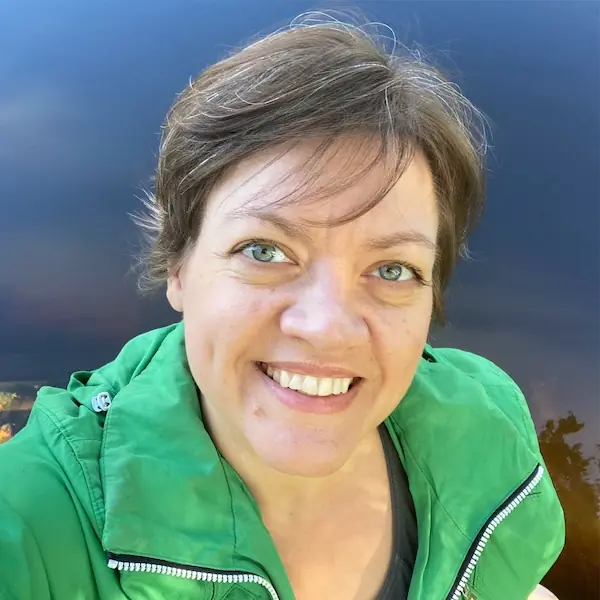
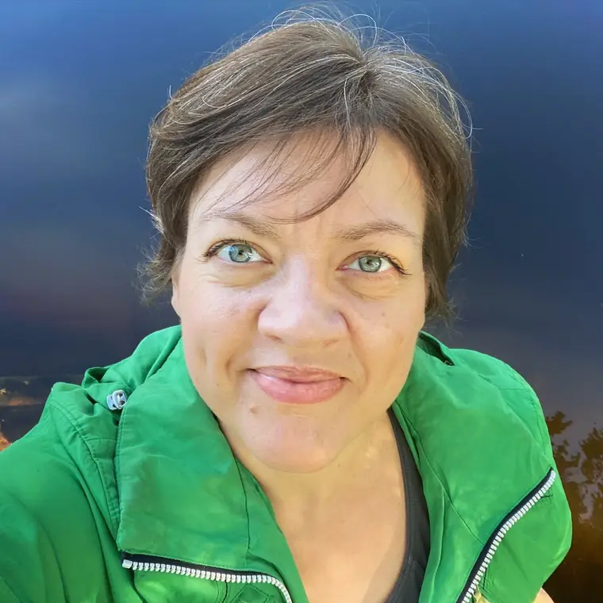

Holistiline nelik
Kokku ~ 12 tundi teraapiat ehk neli 2,5- kuni 3-tunnist holistilise regressiooniteraapia seanssi. Tsükkel on sügava ja kiire muutuse soovijale hea valik. Sobib hästi ka esmakordselt teraapiasse tulijale.
600 €*1 seanss = 150 €
Terviklik teraapia
Evelin Pissarenko – terviklik teraapia
Kui tunned, et soovid teha oma elus, enesetundes ja eneseteostuses muutust või end paremini mõista ja päriselt armastada, siis olen Sinu jaoks olemas.
Minuga kohtumistel saad turvaliselt ja toetatuna:
Protsess on praktiline, sügav ja terviklik.

„Sa ei saa inimesele midagi õpetada, saad ainult aidata tal selle enda seest leida.” “You cannot teach a man anything; you can only help him find it within himself.”
Galileo Galilei

Evelin
Evelinist
45+ aastat elukogemust. Alates 4. eluaastast ärganud teadlik kohalolu, mis avaneb jätkuvalt. Olen läbinud värvikaid, rikkalikke, dramaatilisi, „nagu filmis”, depressiivseid, valusaid, segaseid, avardavaid, selgeid ja müstilisi tasandeid ning alati kaasa kogunud universaalseid teadmisi, eluhäkke ja praktikaid, mis toimivad ja tähendavad päriselt. Aina sagedamini soovitavad mu sõbrad ja tuttavad, et kirjutaksin raamatuid ja jagaksin oma maailma, sest kogemus + teadlikkus annab sügavaid taipamisi ja universaalseid tõdesid.
Olen kogu oma elu tundnud sügavat huvi inimese olemuse, sisemaailma, teadvuse, väe, suhete dünaamika, elu piirialade ja enesearenguvõimaluste vastu. Tegeledes järjepidevalt ja sügavalt iseenda siseilma uurimisega ning vaadelnud uudishimu ja analüütilise meele ning tunnetusliku südamega inimesi ja ühiskonda, olen avastanud ja avardunud rohkem, kui olen eales osanud tahta. Julgustan ka Sind ennast avastama. Tulemus on kuhjaga väärt. Hea kontakt iseendaga on heaolu ja eneseteostuse alus.
Toetun terapeudina paljus just holistilise regressiooniteraapia meetodile ja coachingu praktikatele, samuti oma rikkalikele ja mitmekülgsetele kogemustele elupraktikuna. Teraapia on üks sügavuti minev võimalus ennast täies hiilguses tundma õppida. Läbi selle protsessi olemise ja elamise kvaliteet reaalselt muutub.
Sa saad tõesti ise oma enesetunnet ja elu luua ning muuta mõlemat aina enam selliseks nagu soovid. Kui oled otsustanud seda teha, siis olen hea meelega Sinu teekaaslaseks.
Olen läbinud Holistika Instituudis kaheastmelise koolituse „Holistiline treening ja regressiooniteraapia” (2019–2024, kokku 4,5 aastat). Koolitus kuulub Ülemaailmse Regressiooniteraapia Assotsiatsiooni (EARTh Association) poolt tunnustatud koolitusprogrammide hulka. Kliendipraktikumi olen teinud üle kolme aasta. Tagasisidet minu klientidelt loe palun siit. Olen Holistilise Regressiooniteraapia Seltsi HORETES liige.
Minu terapeudiõppe kursuse juhendaja oli Katariina Liisa Martens, osalenud olen ka Holistika Instituudi asutaja, juhataja ja õppekavade autori Marina Paula Eberthi loengutes ning praktikumides. Holistilise treeningu juhendaja oli Tiina Pedak.
Olen läbi aastakümnete tegelenud enese koolitamisega, uudishimu ja avastamisrõõm ning teooria ja praktika ühendamine on mulle loomuomased. Armastan raamatuid lugeda ja õpitut olemasolevate teadmiste ning oskustega sünteesida ning praktikas kasutusele võtta. Sellele on lisandunud erinevad koolitused, seminarid, töötoad ja veebisarjad.
Minu olulised inspireerijad ja mõjutajad on lisaks eelpool nimetatutele näiteks (pingerida on keeruline koostada, nimed on meenumise järjekorras):
… siinkohal lõpetan loetelu, aga ka Lewis Carrolli Alice’i lood ja Mihhail Bulgakovi „Meister ja Margarita”. Eestlastest on põnevalt minu teekonda saatnud Katrin Saali Sauli, Toomas Pauli, Alar Tammingu, Ainar Leppiku ja Eva Lepiku mõttekäigud ning õpetused.
Eraldi tahan esile tuua neid eredalt säravaid, sügavaid ja inspireerivaid inimesi, kellega mul on olnud au ja õnn elus kohtuda ning kes on mind sügavalt puudutanud, uusi uksi avanud ja üldse eeskujuks ning katalüsaatoriks olnud. Aitäh!
Tegutsen eelnevale lisaks Holistika Instituudis turundusjuhina. Need kaks valdkonda – turundus ja kommunikatsioon ning inimese olemus ja eneseareng – on minu kirg ja huvi. Imeline ja samas loomulik, et läbi holistikamaailma need nii erinevad ja ometi nii lähedalt seotud valdkonnad minus tervikuks kokku said. Tasakaal sise- ja välismaailma vahel.
Turunduse ja kommunikatsiooni valdkonnas olen tegutsenud üle 20 aasta, peamiselt kultuuri ja enesearengu suundades. Olen olnud ka trükimeedia väljaandja ning toimetaja, omavalitsuse avalike suhete spetsialist ja ligikaudu tuhatkonna kontserdi kaaskorraldaja Tartus, Tallinnas, Narvas ja mujal Eestis. Elu on võimaldanud tegeleda veel paljude teiste teemadega, sh. muusikaõpingud ja laste õpetamine, hooldusõendus lastehaiglas, graafiline disain ja trükiste kujundused, mööbli restaureerimine, fotograafia jpm.
Mul on kaks poega ja mu lemmik roll on olla nende ema.
Teemad, mida olen oma elus käsitlenud
Kui soovid minust rohkem teada, siis siin on loetelu spetsiifilisematest teemadest, mida olen kogenud, läbinud ja isikliku elu kontekstis põhjalikumalt käsitlenud:
Küsimused, millega olen silmitsi seisnud
Elukogemused on sundinud endalt küsima ja vastused leidma:
Mida Sina endalt küsid?
Teraapiast
Sa oled üleni oluline!
Tervikliku teraapia protsessi on kaasatud sinu keha, meel (mõtted ja tunded), hing ja vaim, sinu mälestused, unistused, uskumused ja kogu su elukogemus, samuti sinu peremustrid ja suguvõsa energeetiline pärand.
Muutunud teadvuseseisundis rännakud koos teekaaslasest terapeudiga võimaldavad uurida oma sisemaailma ja leida üles oma probleemide juurpõhjused ning töötada need olukorrad turvaliselt ja kindlalt läbi. Nii vabastatakse minevikus blokeerunud tunde- ja mõttemustreid ning traumasid, jõudes iseendale lähemale ja suuremasse heaolutundesse. Läbi sisemaailma saab avaneda ka unistuste tulevik, sest sügav kontakt iseenda erinevate tasanditega annab selgust, väge ja klaari visiooni, kuidas oma elu ehitada iseendaga kooskõlas ning jõuda eneseteostuseni. Suurim võit on aga taasühenduse loomine olevikuga, sest just ja ainult läbi praeguse hetke saab kogeda ja luua.
Kuidas TERAAPIA toimib ja toimub?
Holistilise regressiooniteraapia (HRT) protsessi on kaasatud inimene tervikuna koos oma vajadustega nii füüsilisel, psüühilisel kui hingetasandil, sest holistilised rännakud alateadvusesse võimaldavad töötada nii keha, meele, hinge kui vaimuga. Esimesed seansid viiakse läbi teraapiatsüklina, mida nimetatakse holistiliseks nelikuks. See on intensiivne, efektiivne ja sügav protsess, kus töötatakse inimese alateadvusest ja kehamälust kerkiva materjaliga. Seansid koosnevad reeglina vestlusest ja rännakust. Vahel lisandub ka mõni täiendav teraapiatehnika.
Holistilistel rännakutel (lühidalt muutunud teadvuseseisundis lõõgastunult pikutamine) uurivad kliendid oma sisemaailma ja leiavad üles oma probleemide põhjused ning töötavad läbi olukorrad, kust need alguse on saanud. Nii vabastatakse minevikus kinnikiilunud tunde- ja mõttemustreid, inimesed jõuavad iseendale lähemale ja ka tervenevad.
HRT eesmärk on toetada inimest jõudmaks optimaalse eluni, milles on heaolu, rahu- ja õnnetunne, aga ka jätkuv areng ja väljakutsed. Näiteks saab see teraapiameetod aidata leida enda enesekindlust ja tahet ning seada selgeid ja reaalseid eesmärke, liikudes eneseteostuse poole.
… Sul on:
(Allikas: holistika.ee)
… oled enesearenduse ja vaimu äratamise teel ning kui tahad:
(Allikas: holistika.ee)
Loe põhjalikumalt holistilise regressiooniteraapia kohta ka Holistika Instituudi kodulehelt.
Tagasiside
Minu tegevust terapeudina on iseloomustatud nii:
Kõik oli oluline, sest iga etapp tõi välja uusi nüansse ja vaatenurki, mis on osa tervikust. Mind üllatas meetodi tõhusus!
See kogemus oli võimas, ootused said 120% täidetud! Kõik seansid olid väga olulised. Iga seanss viis sammu edasi ja õpetas omamoodi.
Mulle meeldis protsessi kulg, terapeudi toetus, kandev õhustik. Värskus, hea õhkkond. Sisutihe tegevus. Iga seanss oli sügav ja oluline. Sain kindlust elada enda elu iseendana.
Terapeut oli tasemel, väga kompetentne ja laia kogemusepagasiga. Töö käigus avanesid peidetud mustrid. Kergem olek, mõtteselgus. Allasurutud viha ja alanduse tundest vabanemise kogemus. Paranenud enesehinnang. Turvalisem tunne vaadates tulevikku.
Saavutasin tuntava kerguse ja stabiilsuse. Mul on hea olla. Elada on ikkagi mõtet, sest elu on tegelikult ilus!
Kasvasid enesekindlus ja jõud liikuda oma südamesoovide suunas, et olla sisemises rahus.
Ma hakkasin ennast nägema hoopis teise pilguga. Terapeut oskas mind suunata selliselt, et ma näeksin seoseid ja viiksin märgid kokku reaalsusega ja oma muredega. Ma leidsin oma rahu ja tasakaalu, mida ma ka otsima tulin.
Väga meeldiv terapeut, kuulas mind ära ja sain kõigest avatult rääkida. Tekkis tunne, et olen õiges kohas, minust saadi aru ja tundsin ennast turvaliselt ning rahulikult. Sain mõtteid, kuidas ennast aidata ja selgust minus olevatele tunnetele.
Teraapia ületas ootusi! Hea kontakt terapeudiga. Teraapia tõi hästi pildile sisemised mustrid, mis on takistuseks eesmärkide saavutamisel. Pinnale kerkisid allasurutud teemad minevikust, mida ei olnud varem teadvustanud. Paranes endast arusaamine. Uued teadmised ja uued abistavad meetodid.
See teraapia on külluslik! Aitäh selle eest!
Õppisin end paremini tundma. Üllatas, et minu sees on juba olemas kõik need omadused, mida ma olen alati endas näha tahtnud. Olulisim on minu suurenenud eneseusk. Tunnen, et saan nüüd hakkama paljude asjadega, millega enne ei saanud.
Veel on mind terapeudina kirjeldatud järgmiselt:
Hinnakiri
Teraapia, siseilma rännakud, nõustamine
Kokku ~ 12 tundi teraapiat ehk neli 2,5- kuni 3-tunnist holistilise regressiooniteraapia seanssi. Tsükkel on sügava ja kiire muutuse soovijale hea valik. Sobib hästi ka esmakordselt teraapiasse tulijale.
600 €*1 seanss = 150 €
Pikk teraapiaseanss, mis sobib eriti hästi peale holistilise neliku läbimist. Samuti sobib ühe konkreetse teemaga süvakuti minemiseks.
Kestvus: kuni 2,5 – 3 tundi
150 €
Holistilise regressiooniteraapia lühiseanss, siseilma rännak või teraapiline vestlus/nõustamine. Sobib enesehoolitsuseks ja edasiste teraapia teemade väljaselgitamiseks.
Kestvus: 1—1,5 tundi
100 €
Enesearenguvestlus või heaolunõustamine veebi vahendusel või telefonitsi. Sobib ka reflektsiooniks ja integratsiooni jälgimiseks peale holistilist nelikut või üksikseanssi.
Kestvus: 1h
75 €
* Holistilise neliku eest saab tasuda ka osade kaupa.
NB! Kui Sa ei tule broneeritud seansile kohale ning ei teata mitteilmumisest vähemalt 24 tundi enne seansi algust ette, on tasu ärajäänud seansi eest 50% seansi hinnast. Aitäh mõistva suhtumise eest.
Võta julgelt ühendust!
Hetkel vabu aegu ei ole. Järgmised ajad avanevad alates 1. märtsist 2026.
Eelneval kokkuleppel.
Tavapäraselt on 3-tunnised seansid algusega kell 10.00, 14.00 ja 18.00.
Tallinn, Endla 15, 4. korrus
Holistika Instituut
Vaata kaardil
Inspiratsioon

7. jaanuar 2026
Holistiline maailmavaade ja inimese kogemus tervikuna. Kas oled…
Loe edasi →
15. oktoober 2025
„Sa ei saa peatada laineid, kuid saad õppida surfama.“ Jon Kabat-Zinn. Mõnikord hakkab süda kloppima ilma nähtava põhjuseta…
Loe edasi →
30. detsember 2024
Terapeut on elus märkimisväärselt palju kogenud, sealhulgas nii valu, väljakutseid ja läbikukkumisi kui ka edu, rõõmu ja…
Loe edasi →„Elu toimub praegu. Kunagi pole olnud midagi, mis poleks toimunud olevikus. Ega tule ka.” “Life is now. There was never a time when your life was not now, nor will there ever be.”
Eckhart Tolle